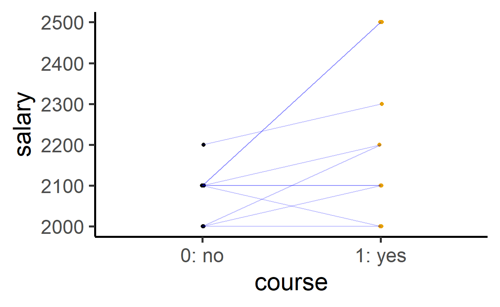

Learning Objectives
In this module, you will learn:
what a potential outcome is;
what a counterfactual is;
how causal effects can be defined;
and why causal inference is so challenging.
Individual level causal effects
Imagine the following situation: you get an offer to participate in a voluntary salary negotiation course.
Would you participate?
To make your decision, you will likely consider whether participation will actually improve your future salary.
How would you define the individual level causal effect of the course on your salary, that is, how would you quantify what you actually gain from the course?
Think about it for a second before continuing.
One straightforward idea would be to simply look at the difference of your salary prior to the course and your salary after the course: salary after course minus salary before course.
But here is a problem with that, because it is very well possible that, as time passes, your salary would have increased regardless of the course.
(The situation is very similar if we want to find out whether some medication helps against a certain disease. Some symptoms automatically improve over time and it would be mistaken to attribute such change to a particular intervention. This is why control groups play such a crucial role in clinical studies.)
A second idea would be to define the effect as
\[\text{Salary with course} - \text{Salary without course} \]
Faced with the decision “Should I participate in the course?”, there are two different ways your salary could turn out – two so-called potential outcomes:
salary withoutcourse : \(\color{blue}{Y}^{\color{green}{X=0}}\)salary withcourse : \(\color{blue}{Y}^{\color{green}{X=1}}\)
\(\color{blue}{Y}\) is the
effect, the result of interest, here your
Think of it as a fork in the road: If you turn left, you don’t participate in the course and end up at \(\color{blue}{Y}^{\color{green}{X=0}}\). If you turn right, you do participate in the course and end up at \(\color{blue}{Y}^{\color{green}{X=1}}\).
The individual level causal effect \(\color{orange}{\Delta}_i\) (Greek: delta) of the salary negotation course is the difference between those two potential outcomes:
\[\color{orange}{\Delta}_i = \color{blue}{Y}^{\color{green}{X=1}}_i - \color{blue}{Y}^{\color{green}{X=0}}_i\]
where
\(i\) indicates the observation, here an individual (e.g., you);
\(\color{blue}{Y}_i\) indicates the
salary of \(i\);\(\color{green}{X}\) indicates
course participation; with \(\color{green}{X_i=1}\) if \(i\) participates and \(\color{green}{X_i=0}\) if \(i\) does not participate.
A (made up) example
Let us consider a fictitious salary table including potential outcomes:
i: number of the individual;salary1: \(\color{blue}{Y}^{\color{green}{X=1}}\), salary with course;salary0: \(\color{blue}{Y}^{\color{green}{X=0}}\), salary without course.
| i | salary1 | salary0 |
|---|---|---|
| 1 | 2300 | 2200 |
| 2 | 2200 | 2000 |
| 3 | 2100 | 2000 |
| 4 | 2500 | 2100 |
| 5 | 2500 | 2100 |
| 6 | 2100 | 2100 |
| 7 | 2200 | 2100 |
| 8 | 2000 | 2100 |
| 9 | 2000 | 2000 |
| 10 | 2100 | 2100 |
We can calculate the individual level causal effect \(\color{orange}{\Delta}_i\) in this salary
table course with salary1 - salary0 (here
executed in R):
Note: R is a free statistical programming
language. You can download it via https://cran.r-project.org/. To
make it a bit easier to use, we can recommend
RStudio Desktop (https://www.rstudio.com/products/rstudio/download/).
In this module, we also make use of the package mosaic (https://cran.r-project.org/package=mosaic)).
# load package
library(mosaic)
# add variable "effect" to the salary table
course <- course %>%
mutate(effect = salary1 - salary0)And thus
| i | salary1 | salary0 | effect |
|---|---|---|---|
| 1 | 2300 | 2200 | 100 |
| 2 | 2200 | 2000 | 200 |
| 3 | 2100 | 2000 | 100 |
| 4 | 2500 | 2100 | 400 |
| 5 | 2500 | 2100 | 400 |
| 6 | 2100 | 2100 | 0 |
| 7 | 2200 | 2100 | 100 |
| 8 | 2000 | 2100 | -100 |
| 9 | 2000 | 2000 | 0 |
| 10 | 2100 | 2100 | 0 |

In our fictious data, many of the individual level causal effects are positive – but some are close to zero or even negative.
The fundamental problem of causal inference
The fundamental problem of causal inference is that we
cannot observe the individual level causal effect \(\color{orange}{\Delta}_i =
\color{blue}{Y}^{\color{green}{X=1}}_i -
\color{blue}{Y}^{\color{green}{X=0}}_i\). For each observation
\(i\), we only get to see one of the
potential outcomes: Either \(\color{blue}{Y}^{\color{green}{X=1}}\)
(
If individual \(i\) participates, we observe the salary with course, \(\color{blue}{Y}^{\color{green}{X=1}}_i\), but never \(\color{blue}{Y}^{\color{green}{X=0}}_i\)
If individual \(i\) does not participate, we observe the salary without course, \(\color{blue}{Y}^{\color{green}{X=0}}_i\), but never \(\color{blue}{Y}^{\color{green}{X=1}}_i\)
The value that we cannot observe is called the counterfactual; it is counterfactual in the sense that it never becomes realized.
For an individual who did not participate in the course, the counterfactual is the answer to the question: What would be my salary if I had participated? And for an individual who did participate in the course, the counterfactual is the answer to the question: What would be my salary if I had not participated?
The average causal effect
Let’s assume for a second that we do know the individual level causal
effects \(\color{orange}{\Delta}_i\)
(variable effect in our fictitious R example).
We can use these effects to calculate additional metrics, such as the
average causal effect \(\bar{\color{orange}{\Delta}}\), by adding
up all \(i\) individual level causal
effects and then dividing the sum (\(\sum\)) by the number of observations
(\(n\)):
\[\bar{\color{orange}{\Delta}}=\frac{\sum_{i=1}^n \color{orange}{\Delta}_i}{n}=\frac{\sum_{i=1}^n(\color{blue}{Y}^{\color{green}{X=1}}_i - \color{blue}{Y}^{\color{green}{X=0}}_i)}{n} =\frac{\sum_{i=1}^n\color{blue}{Y}^{\color{green}{X=1}}_i - \sum_{i=1}^n\color{blue}{Y}^{\color{green}{X=0}}_i}{n}=\overline{\color{blue}{Y}}^{\color{green}{X=1}}-\overline{\color{blue}{Y}}^{\color{green}{X=0}}.\]
The R function to calculate the arithmetic mean is
called mean().
Press Run Code, to calculate the average causal effect
for our fictitious example in which both potential outcomes are
known.
mean( ~ effect, data = course)Note: The mosaic syntax works the following
way:
analyse(y ~ x, data = dat)This means: analyse variable y depending on variable
x in the data table named dat. Which function
analyse() uses depends on the analysis goal.
In the present case, there is only one variable to be considered, which allows us to use the following abbreviation:
analyse( ~ y, data = dat)Note: The average causal effect is positive, but individual causal effects can nonetheless be negative. \(\bar{\color{orange}{\Delta}}\) is an aggregated summary of the data that may not always represent all individual observations well.
Because of the fundamental problem of causal inference, we never actually have both potential outcomes and thus can neither directly calculate individual level causal effects nor the average causal effect, which in our example turns out to be:
\[\bar{\color{orange}{\Delta}}=\frac{\sum_{i=1}^n \color{orange}{\Delta}_i}{n}=120.\]
Missing data
But in reality, for each observation in our data, we will at least know their group membership (i.e., whether they participated in the course or not). Thus, we also know which of the two potential outcomes we actually observe and which one we don’t observe (the counterfactual).
We can thus make our salary table more realistic and change the
unobservable values to be missing – missing values are coded as
NA, not available.
| i | participation | salary0 | salary1 |
|---|---|---|---|
| 1 | Yes | NA | 2300 |
| 2 | Yes | NA | 2200 |
| 3 | Yes | NA | 2100 |
| 4 | No | 2100 | NA |
| 5 | Yes | NA | 2500 |
| 6 | Yes | NA | 2100 |
| 7 | Yes | NA | 2200 |
| 8 | No | 2100 | NA |
| 9 | No | 2000 | NA |
| 10 | No | 2100 | NA |
Usually, data will be structured in a slightly different way, so that
there is only one variable called salary – the actually observed
salary – and a second one containing information about
participation.
| i | participation | salary |
|---|---|---|
| 1 | Yes | 2300 |
| 2 | Yes | 2200 |
| 3 | Yes | 2100 |
| 4 | No | 2100 |
| 5 | Yes | 2500 |
| 6 | Yes | 2100 |
| 7 | Yes | 2200 |
| 8 | No | 2100 |
| 9 | No | 2000 |
| 10 | No | 2100 |
Estimating the causal effect
With the help of the data that we can actually observe, we can calculate two averages: the average salary of those who participated in the course, and the average salary of those who did not participate in the course.
mean(salary ~ participation, data = course)## No Yes
## 2075.000 2233.333\(\bar{\color{blue}{y}}^{\color{green}{x=1}} = 2075\)
\(\bar{\color{blue}{y}}^{\color{green}{x=0}} = 2233.33\)
Note:
mean(salary ~ participation, data = course)is R mosaic for:
Calculate the arithmetic mean (mean()) of the variable
salary (\(y\)) depending
on variable participation (\(x\)), in the data table
course.
Now we could try to estimate the average causal effect using these observed values:
\[\bar{\color{blue}{y}}^{\color{green}{x=1}} - \bar{\color{blue}{y}}^{\color{green}{x=0}} = 2233.33 - 2075 = 158.33\]
But the result differs substantially from the true average causal effect, which we calculated earlier with help of the potential outcomes: \(\bar{\color{orange}{\Delta}} =120\). The difference between those two values is systematic (i.e., not just a result of random chance fluctuations) and such distortions are called bias.
Here, a naive comparison of the two means would lead us to overestimate the true average causal effect. In our fictitious example, people who were more interested in the salary course would have received a higher salary even without the course. There could be a whole number of substantive explanations for such a pattern. For example, people who care a lot about their salary may be more likely to take the course, but also more likely to independently take additional steps to increase their income.
To check out explanation, change the code so that you calculate the
arithmetic mean of the potential outcomes depending on participation.
The potential outcomes are in the same data table and are called
salary0 and salary1.
Hint: To get a hint, press the Hints button
just above the R code. If you move on and press
Next Hint, you get to see the solution and can copy it.
mean(salary ~ participation, data = course)cat("Potential outcomes: average salary without participation:\n")
cat("For those, who participate ('Yes') the counterfactual.\n")
mean(salary0 ~ participation, data = course)
cat("Potential outcomes: average salary with participation:\n")
cat("For those, who do not participate ('No') the counterfactual.\n")
mean(salary1 ~ participation, data = course)"salary0 and salary1 are the two variables if interest. Substitute the variable salary accordingly."The fundamental problem of causal inference applies universally. In many situation, the data can thus lead us astray: our estimates will be biased, and we may often assume that there is a causal effect where there is none, or we may miss existing causal effects.
But we can reduce the risk of such mistakes if we spend more time thinking about how the data were generated. In our fictitious sample, we need to take into account the piece of information that individuals could freely choose whether they want to participate or not. If we take that into consideration and start to think about who would like to participate in such a course, it quickly becomes obvious that simply comparing the observed mean values is not a great way to gauge the average causal effect.
Over the course of the next modules, you will learn more about different types of data-generating mechanisms and how those influence causal inferences.
Note
This course was supported by a grant from the German Federal Ministry of Education and Research, grant number 16DHBQP040.